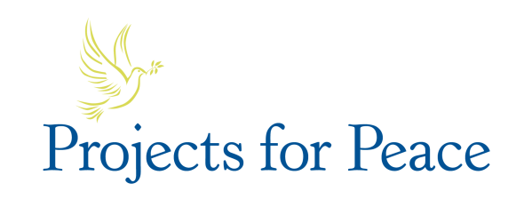
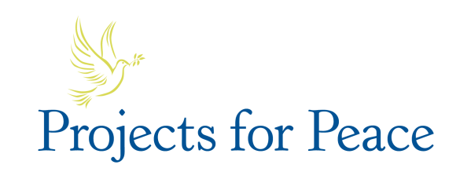

Immersive Storytelling of Rohingya Refugee Experience
RAY LC | FABEHA MONIR | ANIKA ULLAH

 

The displacement of refugees from their natural homes have caused violence and estrangement all over the world, as victims, perpetrators, and hosts jostle for territorial and resource control, to the detriment of victims who live in unbearable conditions outside their homelands. There’s misunderstanding amongst hosts and Western media that see refugees as parasites and destructive agents who hoard resources. Educating both sides of the refugee-host divide involved programs like UNVR that make immersive films. Usually, these experiences follow conventional 2D filmmaking approaches, using only static scenes and narration.

Instead of a static camera like traditional films, we move the 360 camera around, letting refugees pass the camera amongst each other, following them when they walk around and play football.

Instead of making the filmmaker disappear in VR narratives, we let ourselves be part of the story, playing and interacting with the refugees to show how the experience lives in real life.

Instead of asking them to speak into a mic, we film narratives based on refugee experience, both positive and negative, and let refugees frame their stories themselves, taking us on their journey.

We teach refugees to tell their own stories using a phone that they can use to record night activities during Ramadan and using a 360 camera that they can take anywhere to show their audience.
Instead of investigating hardships of refugees from a Western perspective, we enabled a boy in the refugee camp and his friends to create a visual experience that represent their daily struggles the way they have become used to. The interactive VR film becomes an empowerment tool to enable self-expression in a part of the world that have become used to being the observed as opposed to the observer. This takes advantage of VR as a medium for both immersion and capability to surprise in 4D. The 1st exhibition of the work took place at THP ArtLab, a gallery focused on emergent technologies and classical traditions in Lahore, Pakistan.
Funding and Collaborators:
Davis Peace Projects Prize,
PHALS Cox's Bazar, and
ArtLab Gallery @ Happieee Place Lahore.